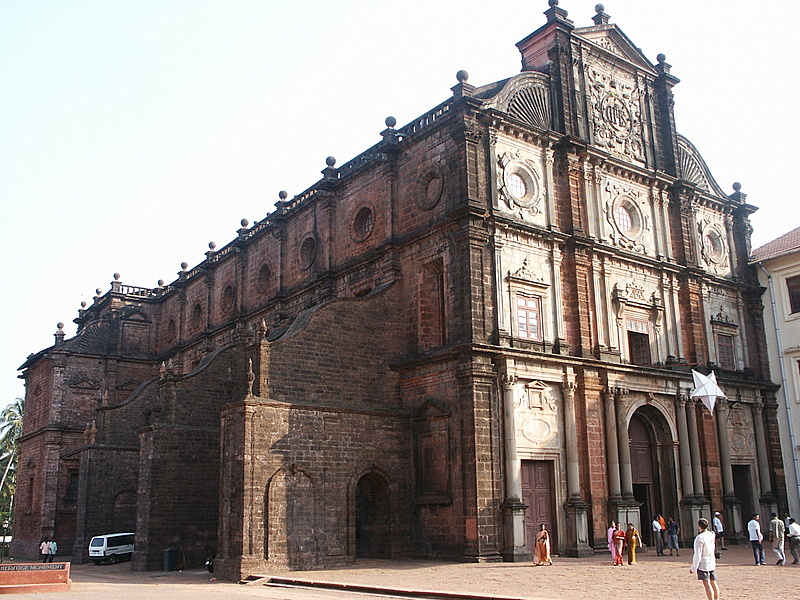
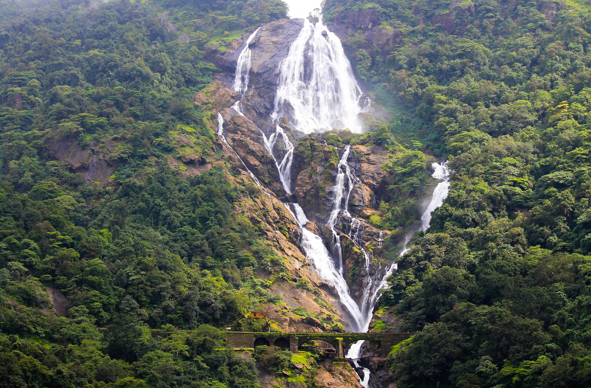
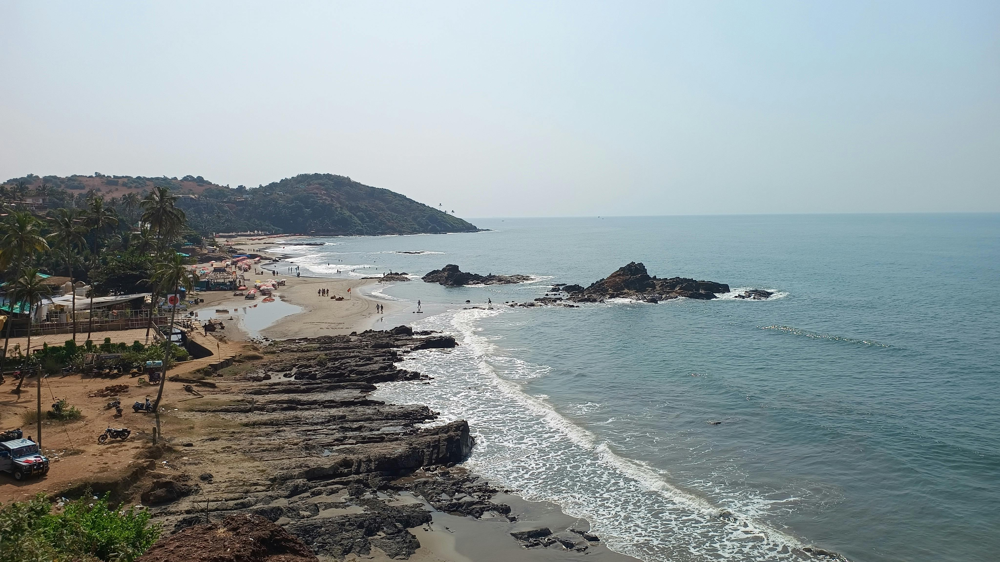
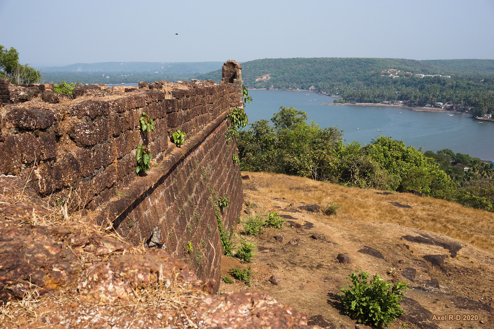
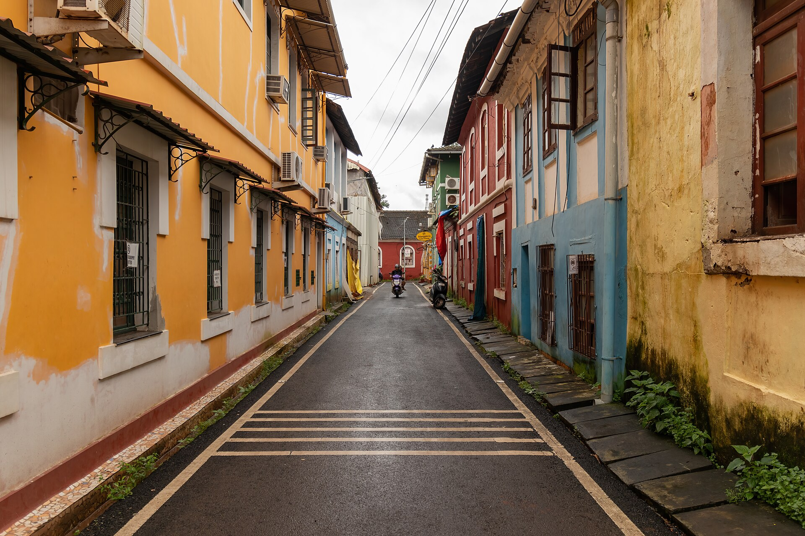

Making the most of it
Pre-Wedding in Goa
For those who want to come early and spend a few days exploring Goa together before the celebrations begin. We highly recommend arriving Tuesday evening, November 24th to make the most of two full days together — but come whenever works for you. We'll head south to The Windflower on Friday morning when the wedding weekend kicks off.
How It Works
Let us know you're interested in the RSVP
The pre-wedding days in Goa are optional and open to those who want to join. We'll ask in the RSVP form whether you'd like to come early, and we'll coordinate from there — helping connect people and figure out the details as the group takes shape. The itinerary is still coming together, but here's a sense of what we're thinking. We may split into smaller groups based on interest, and you're always welcome to break off and do your own thing.
Daytime — Things We Might Do
We'll finalize plans closer to the date based on who's joining and what people are up for. These are the kinds of things on our radar:

Old Goa & Basilica of Bom Jesus
History & ArchitectureA UNESCO World Heritage Site and a well-preserved example of Portuguese colonial architecture in Asia.

Dudhsagar Falls
Nature & Day TripOne of India's tallest waterfalls, set inside a wildlife sanctuary.

Vagator & Anjuna Beach
BeachesTwo of North Goa's most well-known beaches.

Chapora Fort
SightseeingA 17th-century fort on a headland with views over the coastline.

Goan Food & Local Spots
Food & CultureGoan cuisine is distinct from the rest of India, shaped by centuries of Portuguese influence.

Ayurvedic Spa
Wellness & RecoveryGoa has a good reputation for Ayurvedic wellness.
Evenings
🌙 Dinners & Nights Out
Evenings we'll do together. We'll coordinate group dinners — North Goa has some great restaurants with Goan-Portuguese kitchens. And Goa is known for its nightlife scene, particularly around Vagator and Anjuna, with rooftop bars and open-air clubs. We'll take advantage of that at least one night before heading south to the venue on Friday.
Logistics
✈️ Getting There
Fly into Mopa Airport (GOX) (a.k.a. Manohar) in North Goa (either Goan airport works, but Mopa is closer to where we'll stay, depending on traffic). We recommend arriving Tuesday evening, November 24th — but come whenever works for you. Uber and taxis are available from the airport at reasonable prices.
🏡 Accommodation
We'll help connect people based on who's joining and what works for everyone. We may look for one or more shared villas, Airbnbs, or separate hotels. Let us know you're interested in the RSVP and we'll go from there.
📅 Heading South on Friday
On Friday morning we'll make our way down to The Windflower Resort in Varca for the start of the wedding weekend — about 60–90 minutes by car down the Goa coast.